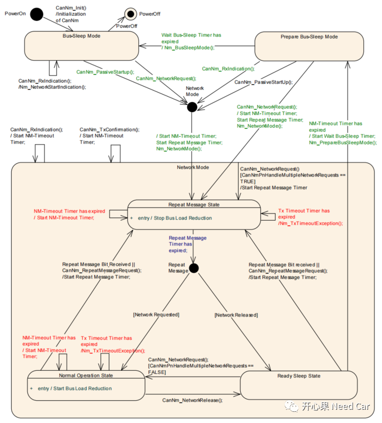
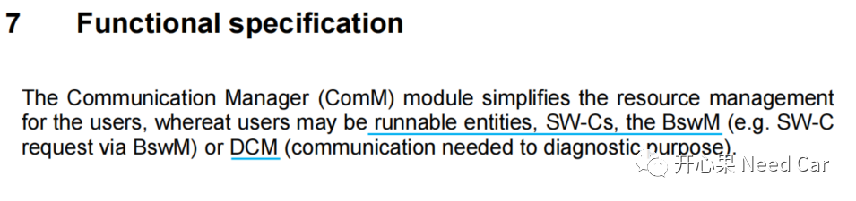
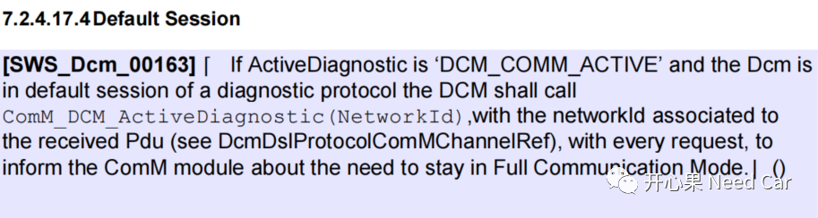
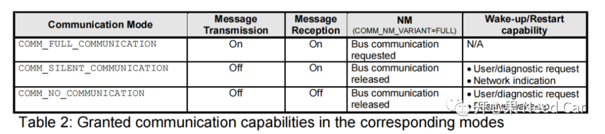
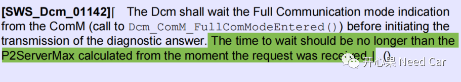
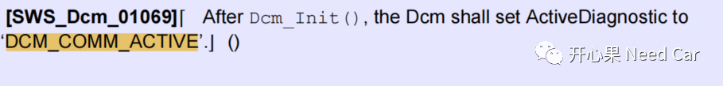
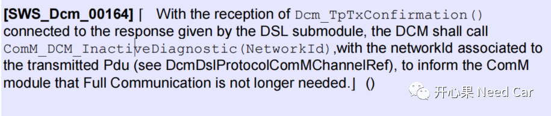
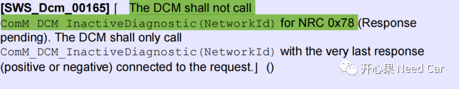
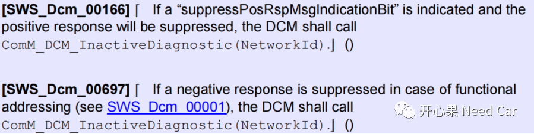
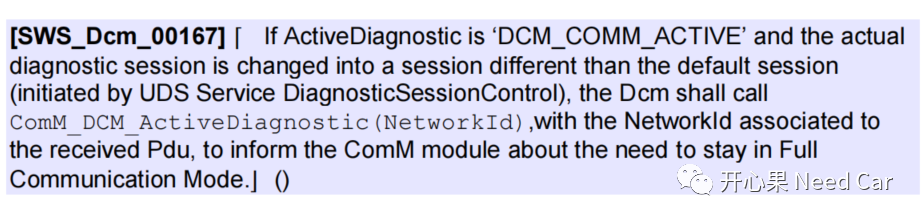

开心果 Need Car · 2022-08-29T19:05:00+08:00 · 微信原文
本文焦点：诊断报文能否像网络管理报文那样唤醒网络？对于这个问题，我先给出个人答案：可以。为什么可以？我将从Autosar规范协议和工程问题角度谈一下个人理解。
下图CanNM网络状态机，大家应该都比较熟悉，ECU冷启后，由BSM（Bus-Sleep Mode）切换到NM（Network Mode）模式需要调用CanNm_PassiveStartup()或者CanNm_NetworkRequest()接口。一般来说，收到其他节点的网络管理报文，我们归为被动唤醒流程，即：调用CanNm_PassiveStartup()接口，使得节点网络进入NM模式。如果收到的报文是诊断报文，是否可以调用CanNm_PassiveStartup()接口，让节点进入NM模式？个人理解：不能。既然不能，就只能调用CanNm_NetworkRequest()接口切换网络模式，如何理解这个操作呢？

我们知道，CanNm_NetworkRequest()接口的调用意味着有User主动请求网络通信，所以，诊断报文是否可以看作一个User，且请求网络呢？答：可以。我们看一下Autosar如何定义User，如下所示：

解释：runnable entities、SW-Cs、 BswM、DCM均可以作为User。既然，DCM可以作为User，可以主动请求和释放网络，那条件是什么呢？继续理解Autosar规范，如下所示：

解释，如果要DCM请求(request)网络，需要满足如下条件：
诊断会话如果处于默认会话下，诊断需要处于激活状态，ActiveDiagnostic == DCM_COMM_ACTIVE；
接收到诊断报文，通过ComM_DCM_ActiveDiagnostic(NetworkId)接口请求对应的Channel处于Full Communication模式。进入Full Communication模式，意味着总线（Bus）通信被requested，注意：COMM_NM_VARIANT = FULL，如下所示：

DCM如何知道已经进入Full Communication模式呢？ComM会通过
Dcm_ComM_FullComModeEntered()接口告知DCM，其请求的Full Communication模式已经进入，如下所示：

注意：ComM进入Full Communication模式不能超过P2ServerMax时间，否则，诊断响应会超时。
ActiveDiagnostic何时进入DCM_COMM_ACTIVE模式呢？答：当DCM模块完成初始化的时候，ActiveDiagnostic进入DCM_COMM_ACTIVE模式，如下所示：

DCM是如何释放（release）网络的呢？如下所示：

解释：
诊断会话如果处于默认会话下，通过接口Dcm_TpTxConfirmation()告知DCM，诊断请求已被成功应答，DCM调用ComM_DCM_InactiveDiagnostic(NetworkId)接口告知ComM，其不再需要Full Communication通信模式。
诊断会话处于默认会话下，DCM请求网络/释放网络的其它节点解释：
如果DCM回复NRC 0x78，无需释放网络，即：网络仍然被请求，如下所示：

如果诊断请求的响应抑制位置位（bit7 = 1）或者功能寻址的否定响应抑制，对于功能寻址，哪些否定响应可以不回，可以参考前文Uds诊断：这10个诊断问题，你能回答几个？。DCM需要释放网络，如下所示。

诊断处于非默认会话，网络处于何种状态
如果诊断会话处于非默认会话下，ComM的Channel处于Full Communication模式，意味着网络一直被请求，如下所示：

Q1：诊断报文可以唤醒ECU吗
如果Trcv硬件不支持PN过滤，比如：使用TJA 1044这样的Trcv。只要收到的报文满足Trcv的过滤时序，即可将ECU唤醒，之后由软件实现网络管理报文和诊断报文的过滤，以及网络的唤醒。
Q2：RSS状态下，收到诊断报文，可以进入NOS状态吗？
A2：如果节点的网络处于RSS（Ready Sleep State），收到诊断报文，能否进入NOS（Normal Operation State）状态，需要分情况讨论。
首先，如果节点的网络类型是被动网络节点（CANNM_PASSIVE_MODE_ENABLED = TRUE），即：该节点没有发送网络管理报文的功能，也就没有进入NOS状态的可能。如下的讨论建立在节点为主动网络节点的前提讨论。
如果节点没有PN功能（CanNmPnHandleMultipleNetworkRequests == FALSE），当节点收到诊断报文时，DCM这个User，请求ComMFull Communication模式以后，即可调用CanNm_NetworkRequest()接口主动请求网络，进而进入NOS状态，进入NOS状态以后，节点可以发送网络管理报文。如果节点在默认诊断会话下，且诊断被Confirmation，意味着节点的网络状态被Release，网络进入RSS状态。如果节点在非默认会话下，则节点在NOS状态下一直周期性发送网络管理报文。如果S3超时，或者会话再次切换到默认会话，则DCM释放网络，网络进入RSS状态。
（二）节点具体PN功能
如果节点具有PN功能，且CanNmPnHandleMultipleNetworkRequests == TRUE，当节点收到诊断报文时，DCM请求网络，节点的网络状态由RSS切换到RMS（Repeat Message State），如果当前诊断会话处于默认会话，则诊断响应被Confirmation以后，DCM释放网络，如果Repeat Message Timer超时，且DCM仍然在请求网络，则进入NOS状态，如果DCM已经释放网络，则再次进入RSS状态。如果诊断处于非默认会话，且S3没有超时，则节点由RMS状态进入NOS状态，节点在NOS状态下发送网络管理报文。
Q3、节点$11 01/81复位后，节点网络处于何种状态？
节点完成升级后，可以被网络管理切换进入指定的网络状态。
Q4：Bootloader是否具有网络管理功能？
A4：Bootloader存在的主要目的有两个：
引导启动程序；
参考资料
AUTOSAR_SWS_COMManager.pdf
AUTOSAR_SWS_CANNetworkManagement.pdf
AUTOSAR_SWS_DiagnosticCommunicationManager.pdf
往期精彩回顾